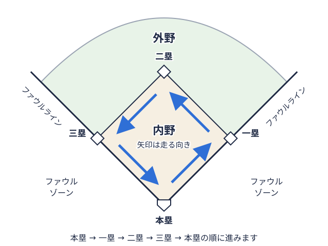

部員向けガイド 2026-11-25
大学野球のキャッチャー上達ガイド｜捕球・ブロッキング・送球・配球の練習の順番
大学野球のキャッチャーは「何から練習するか」で迷いやすい
キャッチャーは、投手の球を受け、ワンバウンドを止め、走者を刺し、配球でも試合に関わるポジションです。やることが多い分、「まず何を練習すればよいのか」「配球は勉強しているのに、そもそも球が止まらない」と悩む部員もいるのではないでしょうか。
この記事では、大学野球で捕手を務める部員や、これからコンバートされるかもしれない部員に向けて、技術を4つに分けて練習の順番を整理します。あわせて、本塁でのクロスプレーに関わる規則や、試合を観て学ぶときの着眼点も扱います。
なお、ここで書く練習方法は一般的に紹介されている内容の整理です。体の状況や指導方針はチームごとに異なるため、実際のメニューは監督・コーチ・トレーナーと相談して決めてください。
捕手技術は4つに分けて考える
キャッチャーの技術は、大きく次の4つに分けると整理しやすくなります。
| 技術 | 内容 | 主に関わる場面 |
|---|---|---|
| キャッチング | 投手の球を確実に捕る | すべての投球 |
| ブロッキング | ワンバウンドを体の前で止める | 変化球・低めの球 |
| スローイング | 二塁・三塁へ素早く正確に送球する | 盗塁塁にいる選手が、安打や守備のミスなどによらず、投球の間に次の塁へ進むこと。成功すると盗塁が記録される。  用語辞典で見る・ピックオフ |
| インサイドワーク | 配球・サイン・投手とのやり取り | 試合の組み立て全体 |
プロの指導現場でも「捕る・止める」が先に置かれている
2026年11月18日付の中日ドラゴンズ関連報道（東海ラジオ『Live Dragons!』の内容を伝える記事）では、来季の1軍バッテリーコーチを務める予定とされる前田大輔コーチが、捕手陣への基本的な指導方針を語っています。報道によれば、優先順位としてまずキャッチング、次にブロッキング、そしてスローイングを挙げ、配球の工夫は個人の技術の後にチームとして取り組む要素として位置づけているとのことです。
もちろん、これはプロ球団での話であり、大学野球のすべてのチームに当てはまるわけではありません。ただ、「配球より先に、捕って止める土台をつくる」という考え方は、練習の順番を決める際の一つの参考になります。
キャッチング：投手が投げやすくなる受け方を目指す
キャッチングは、投手の球を捕る動作そのものです。大学野球では、投手の球速が高校時代よりも上がることが多く、ミットを構えた位置から動かさずに捕れるかどうかが、投手の安心感にもつながると考えられます。
練習で意識したいポイント
- ミットをなるべく早く、ボールの軌道に合わせて準備する
- 捕球後にミットを大きく流さない
- 投手の球種ごとに、球の曲がり方・落ち方を把握する
- 構えた位置に球が来なかったときも、体全体で対応する
一般的な練習としては、壁当てや、近い距離からのキャッチボールで受ける動きを確認する方法があります。ブルペンでは、投手の球を受けながら、ミットの動きを動画に撮って見返すと、自分のクセに気づきやすくなります。
手や指のケアも忘れずに
捕手は、構えているときに指先や手のひらに負担がかかりやすいポジションです。痛みが続くときは我慢して練習を続けず、チームのトレーナーや医療機関に相談してください。肩や肘のケアについては、野球肩・野球肘の予防ガイドも参考になります。
ブロッキング：体の前に落として止める
ブロッキングは、ワンバウンドの球を後ろに逸らさずに止める技術です。パスボールやワイルドピッチが走者の進塁につながるため、試合の流れを左右する場面もあります。
基本的な考え方
一般的に紹介されているブロッキングの基本は、次のとおりです。
- ボールを「捕りに行く」より、体の前に「落とす」意識を持つ
- ミットは補助として使い、体の正面で受ける
- ミットを体から離しすぎず、ミットと体の間を抜けさせない
- 素手の側はミットの後ろに隠す
- あごを引き、体を丸めて、体で受け止められる姿勢をつくる
- 膝をついて体を前に出し、ボールを前方に落とす
こうしたポイントは、野球の技術解説サイトなどでも紹介されています（例：キャッチャーのブロッキングの基本（Good at Baseball））。
練習の進め方の一例
最初から全力で投げてもらうと、恐怖心から体が開いたり、ミットを出しすぎたりする場合があります。そのため、柔らかいボールを使い、近い距離からワンバウンドを転がしてもらう練習から始め、徐々に距離と強さを上げていく方法が紹介されています。動きを覚えるための練習については、Sufuの練習メニュー動画でも取り上げられています。
大切なのは、「止めた後に何をするか」まで含めて練習することです。ボールが前に落ちたら、走者の動きを確認しながら素早く拾って送球するところまでを1つの流れにしておくと、試合でも判断しやすくなります。
スローイング：捕ってから投げるまでを一連で見る
盗塁を防ぐための送球は、肩の強さだけで決まるわけではありません。一般的には、投手のクイックモーションの速さ、捕手の捕球から送球までの動作、送球の正確さ、そして二塁手・遊撃手二塁と三塁の間あたりを守る選手。スコアブックでは、守備位置を表す番号「6」で書く。 用語辞典で見るのタッチの技術が組み合わさって結果が決まるとされています。
用語辞典で見るのタッチの技術が組み合わさって結果が決まるとされています。
練習で見直したい順番
- 捕球位置から、無理なく素早く投げられる姿勢に入れているか
- ステップと握り替えにムダな動きがないか
- 送球が低く、二塁ベースの手前の野手がタッチしやすい位置に届いているか
- 投手のクイックモーションとの連携ができているか
クイックスローイングの練習では、捕球後すぐ送球する動作を繰り返し、一定のテンポを意識する方法も紹介されています。ただし、速さを求めて送球が乱れると逆効果になる場合があります。まずは正確さを確認し、そのうえで速さを上げていくのがよいでしょう。
送球フォーム全般の見直し方は、送球フォーム改善の記事にまとめています。捕手は一般的な内野手と比べて、捕ってから投げるまでの姿勢や足の運びが異なるため、その違いを意識して読んでみてください。
肩肘への負担に注意
捕手は、盗塁阻止の送球や、投手への返球で肩や肘を使う回数が多くなります。練習量が増えやすい時期は、痛みや違和感の有無を日ごとに確認し、必要に応じて投球数を調整することが大切です。
インサイドワーク：配球は「考える材料」を増やすことから
配球は、「正解」が1つに決まるものではありません。打者の傾向、投手の調子、点差やカウント、走者の状況など、多くの要素を合わせて判断するものです。
配球を学ぶための3つの材料
- 自分のバッテリーの結果を振り返る：打たれた球、抑えた球について、なぜそうなったのかを考える。結果だけでなく、投手の意図やコースのずれも含めて確認する
- スコアブック試合の経過と選手の成績を、決まった記号を使って書き残す記録用紙。打率などを計算するもとのデータになる。用語辞典で見るを活用する：打者ごとの打球方向や、カウント別の結果を書き残しておくと、次の対戦に生かしやすくなります。書き方はスコアブックの書き方ガイドが参考になります
- 他チームの試合を観察する：プロや他大学の捕手の位置取り、サインの出し方、間の取り方を映像で確認する
サインの基本や見方については、サインの見方・基本ガイドにまとめています。サインの種類を理解しておくと、バッテリー間の意思疎通や、相手のサインを推測する際にも役立ちます。
投手との対話を大事にする
配球は、捕手が一方的に決めるものではありません。投手が「この球種を投げたい」と感じる場面と、捕手が「この球種が有効だ」と考える場面が、必ずしも一致するとは限りません。試合前後に、投手と配球の意図を共有しておくと、試合中の判断がスムーズになる場合があります。
本塁でのクロスプレーと規則：6.01(i)を知っておく
捕手は、本塁でのクロスプレーに関わる機会が多いポジションです。公認野球規則には、本塁での衝突プレイに関する規定（6.01(i)、いわゆるコリジョンルール）があります。
規則解説サイトなどで紹介されている要点は、次のとおりです。
- 得点しようとする走者が、捕手などと接触する目的で走路を外れた場合は、アウトになる
- ボールを持たない捕手が、得点しようとする走者の走路をふさいだ場合は、走者はセーフになる
- ただし、捕手が送球を実際に捕ろうとして、結果的に走路をふさいだ場合は、違反とはみなされない
- 本塁でのフォースプレイには適用されない
- 2022年の改正で、本塁のカバーに入った投手を含む野手にも適用されると明記された
上記は、規則を紹介している解説サイトの内容を整理したものです。条文の正確な文言や、最新の改正内容は、日本野球機構（NPB）や全日本野球協会の公式規則書で必ず確認してください。大学野球の公式戦で適用される規則は、所属連盟の運用も含めて、チームの監督・審判に確認するのが確実です。
捕手の練習では、送球を受ける位置どりと、走者との接触を避けるタッチの仕方も確認しておくとよいでしょう。
試合を観て学ぶ：順位表と日程を活用する
捕手の技術は、自分の練習だけでなく、他チームの試合を観ることでも学べます。ただし、すべての試合を観る時間はないため、順位表や日程を使って、観るべき試合を絞るのも一つの方法です。
- 勝ち点同じ相手との試合を続けて行い、先に2勝したチームに与えられる点。勝った試合数ではなく、この点の多さで順位を決める。
 用語辞典で見るを争っている上位校の対戦カード同じ2チームが、勝ち点をかけて続けて行う試合のまとまり。東京六大学では、どちらかが2勝するまで同じ相手と戦う。用語辞典で見るは、緊迫した場面での配球やサインの出し方を観察しやすい場合があります
用語辞典で見るを争っている上位校の対戦カード同じ2チームが、勝ち点をかけて続けて行う試合のまとまり。東京六大学では、どちらかが2勝するまで同じ相手と戦う。用語辞典で見るは、緊迫した場面での配球やサインの出し方を観察しやすい場合があります - 最下位争いや入れ替え戦上の部で最下位になったチームと、すぐ下の部で優勝したチームが戦う試合。勝った側が次のシーズンに上の部へ入る。
 用語辞典で見るがかかる試合は、継投先発投手から救援投手へ、投手を交代させながら試合を進めること。用語辞典で見るや守備の判断が表れやすいことがあります
用語辞典で見るがかかる試合は、継投先発投手から救援投手へ、投手を交代させながら試合を進めること。用語辞典で見るや守備の判断が表れやすいことがあります
当サイトでは、東京六大学野球・東都大学野球などの順位表や日程を掲載しています。
順位表は連盟公式サイトの情報をもとにしています。気になるカードがあれば、配信や球場で観戦し、捕手の動きに注目してみてください。配信の見方は大学野球の中継・配信ガイドで紹介しています。
練習計画の立て方：1週間の組み立て例
最後に、捕手が練習を組み立てるときの考え方を整理します。以下はあくまで一例です。チームの練習時間や自分の課題に合わせて調整してください。
- 課題を3つ書き出す：直近の試合やブルペンを振り返り、「後逸した」「送球が逸れた」「配球の意図が説明できなかった」などを具体的に記録する
- 基礎を優先する：キャッチングとブロッキングは、日々の練習の中に少しずつ組み込む
- 送球は量を管理する：肩肘への負担を考え、投げる回数や強度を事前に決めておく
- 配球は週1回は振り返る：スコアブックや試合映像を見て、結果と意図を投手と共有する
- 疲労や痛みの記録をつける：違和感が出たら早めにトレーナーへ相談する
全体のトレーニングや回復の考え方は、オフシーズンの筋トレメニューや回復・睡眠のガイドも参考にしてください。
まとめ
- 捕手の技術は、キャッチング・ブロッキング・スローイング・インサイドワークの4つに分けて考えると整理しやすい
- プロ球団のコーチが「キャッチング、ブロッキング、スローイング」を個人の技術として先に挙げ、配球はチームとしての要素と位置づける例があり、基礎を優先する練習の順番の参考になる
- ブロッキングは「止める」より「体の前に落とす」意識で、柔らかいボールから段階的に練習する方法が紹介されている
- 本塁でのクロスプレーには公認野球規則6.01(i)があるため、条文と所属連盟の運用を確認しておく
- 練習後は、肩肘や指先の状態を確認し、違和感があれば早めに相談する
捕手は大変なポジションですが、チーム全体の守りを支える役割でもあります。自分の課題を整理し、順番に取り組むことで、少しずつ試合での手応えにつなげていきましょう。
この部活・競技を応援したい方へ
協賛・応援はこちらから。
取材してほしい部活を募集中
あなたの部活・チームを取材してほしい方はこちらから。
部活を続けながら、就活も進めたい方へ
体育会の学生のための就活相談です。無料で、メールアドレス・学年・所属の入力だけで始められます。